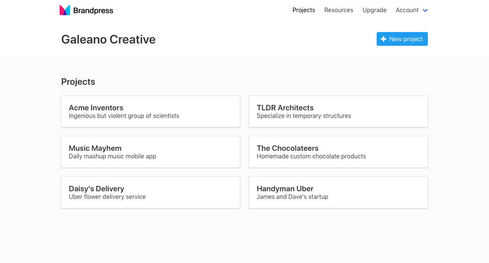

The first thing you will need to do when starting a new branding project, is create a project. A project can be an individual or several stake holders of a new branding initiative. Essentially, a project will include anyone involved in the branding of a product, company or service. Give the new project a name and a brief description to help you distinguish it from other projects. Next, you will select the exercises you would like to administer to this new project. There is more information about the brand exercises below.
Sharing
Once you create a new project a unique URL is generated and can be viewed by clicking on the Share link in the project details page. Copy the unique URL and paste it in an email, chat, or text to the project members you would like to complete the brand exercises. Feel free to distribute the link anyway you see fit, but remember, anyone with this unique URL will be able to submit responses.
Settings
At any time, you can select the Settings link from the project details page and modify the project name, description and brand exercises. Click Update project after you've made changes to save the updates. You can also delete the whole project. Once you delete a project, all the data will be lost and there will be no way to recover the information again.
Presenting
If you would like to go through the exercises in person with your clients, or to view the exercises available to the project, you can select the Present link in the project details page to open the brand exercises as they will appear to anyone with the unique project URL.